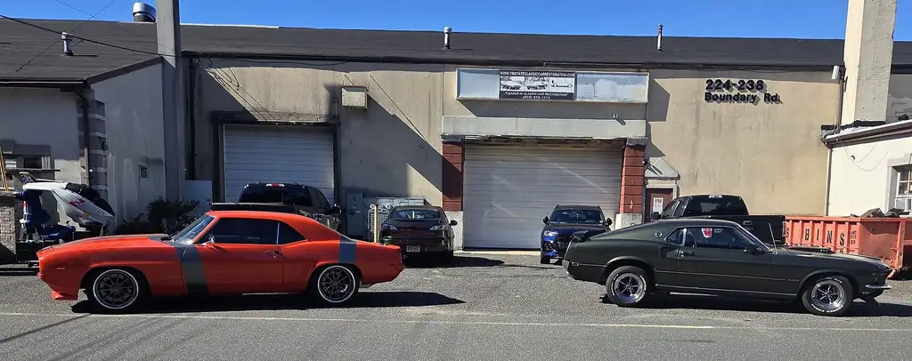

About our Company
If you are searching for a restoration shop to restore your old car or truck, it’s important to choose the right shop for your specific needs. If you want your vehicle restored correctly, then it needs to be worked on by a shop that specializes not only in old car restorations but on the type and brand of car that you own. No one shop can be expected to know everything there is to know about every car ever built. If you own a British sports car, don’t expect a shop specializing in American muscle cars to know how to restore your car and in a timely manner. If they’ve never worked on your type of vehicle before, your car may be the experimental vehicle they are looking to learn on.
However, there are a few select shops that have been in business for many decades working on all different types of cars because they have the right staff.Tristate Restoration with the proper knowledge and experience that allows them to do so. Never go to a local garage or body shop, because they simply do not have the skill or knowledge necessary for restoration work. Restoration shops are not body shops, and body shops are not restoration shops. Dealing with non-specialists will result in higher restoration costs, because they take longer to do things due to their unfamiliarity with the car. When you are being charged by the hour, every minute counts. Like any business that relies solely on a skilled work force to produce a finished product, a restoration business is very difficult to run, due to the extensive use of hand labor. By understanding the numerous problems that a shop proprietor has to deal with, you will be able to comprehend why he has to perform certain tasks, charge for each of those tasks accordingly and expect you to make payments promptly.
Because no two cars are in the same condition when their restorations begin, it would be unjust for you to compare your estimate with that of another vehicle. It’s difficult for the shop owner to provide an estimate that will hold true throughout the length of the restoration process because the restorer doesn’t have X-ray eyesight; he simply cannot judge the amount of rust and body repair that might be required without disassembling the entire vehicle and inspecting every component. And because they cannot foresee every single problem, most restorers have a clause in their contracts that states an additional charge will be incurred if extra work is required.We only Charge the customer true time if we work on you car a hour you only get charge for that hour nothing more .But if you want the absolute highest quality possible, there is no alternative, particularly from the restorer’s perspective.
Most shops require a substantial deposit before work begins as it lets them start ordering the parts and supplies needed. The better-run shops will invoice you on either a weekly, bi-weekly or monthly basis, depending on what you have agreed to. Each invoice statement should include detailed labor descriptions, a listing of all purchased parts and a brief outline of the progress that is being made. If all charges are realistic, pay your bill promptly. Should you fail to pay your bills in a timely manner, the shop has the right to stop work, and your project will get pushed aside, only to lose its spot in line when you decide to pay what is owed. Up-to-date accounts always receive top priority. If a continuous restoration is beyond your means, set a budget with the shop owner prior to the start of the project. The restorer will then work against advanced installments until all the money is used up. Should you take more than 30 days to furnish additional money, a nominal monthly fee for storage and interest charges may be incurred. This is only fair, as space costs money.
